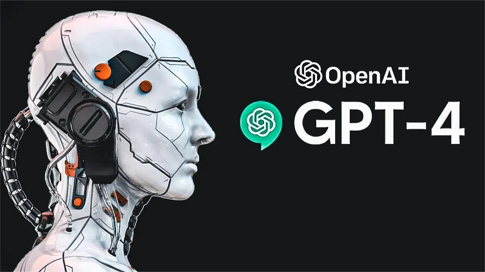

Business: GPT-4
Leaders | The Economist
社论 | 经济学人
What really went wrong at Silicon Valley Bank
硅谷银行爆雷背后
 Editorial: SVB Shutdown
Editorial: SVB Shutdown
THE SHIFT | The New York Times
转变 | 纽约时报
GPT-4 Is Exciting and Scary
GPT-4 ，让人“欢喜”让人“怕”